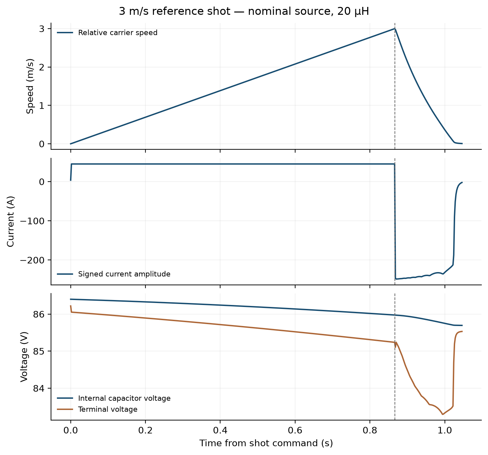
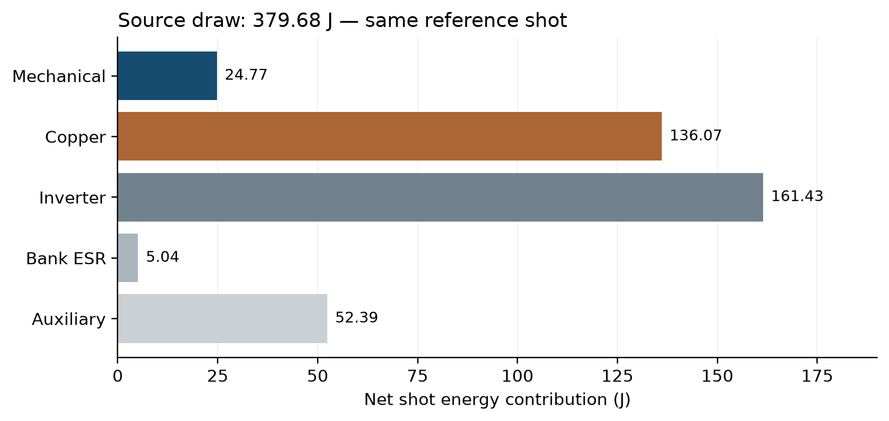
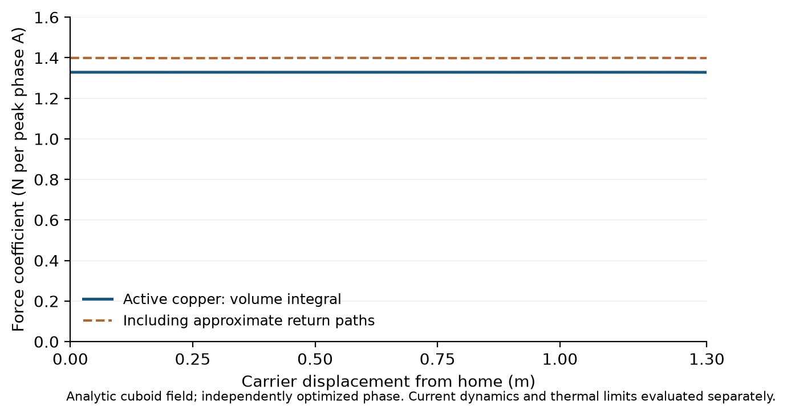
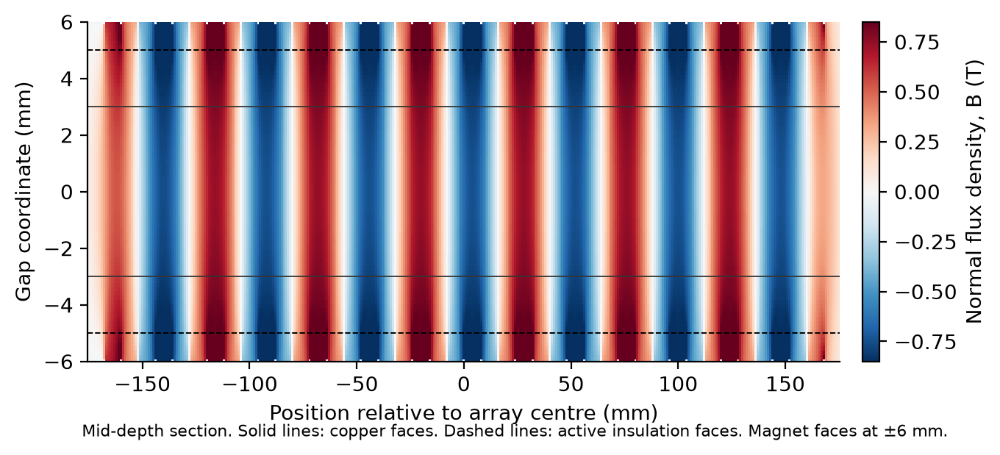

Geometry & exchange
Eight native/STEP states, nominal assembly/motion checks and native mass properties.
Inspect evidenceThe evaluated configuration is VOLLEY-G5-ACR1. Geometry, motor/circuit behavior and orbital delivery use explicitly identified models and source files.
Eight native/STEP states, nominal assembly/motion checks and native mass properties.
Inspect evidenceFinite motor geometry, source/current/voltage model, arrest and explicit installed allocation.
Inspect evidenceFrozen synthetic target states, release recoil, continuous host arcs and native Orekit replay.
Inspect evidenceExact report plus original scientific figures and controlled Blender views.
Inspect evidence

Native solid geometry, nominal motion, interface retention and declared analytical sizing. Reference actuator envelopes and allocations are identified in the source; manufacturing and instrumented hardware correlation follow.
Finite geometry and coupled computational source/motion models. The 1–3 m/s command band is the supported study range; no hardware rating or flight capability is asserted.
Fixed-axis J2 point masses, synthetic preplanned full-state targets, constant inertial host force and Isp 220 s. Drag, higher gravity, attitude/plume allocation, navigation and finite exit geometry are outside the mission model.
Independent replay and step refinement assess numerical consistency. They do not establish physical delivery accuracy, measured reliability or payload compatibility.
149.55672 kg computed CAD mass + 7 kg power/control allowance = 156.55672 kg retained device allocation; + 48 kg payloads = 204.55672 kg loaded device. The generic wet host is 500 kg including its 20 kg fuel once, so the mission begins at 704.55672 kg.

